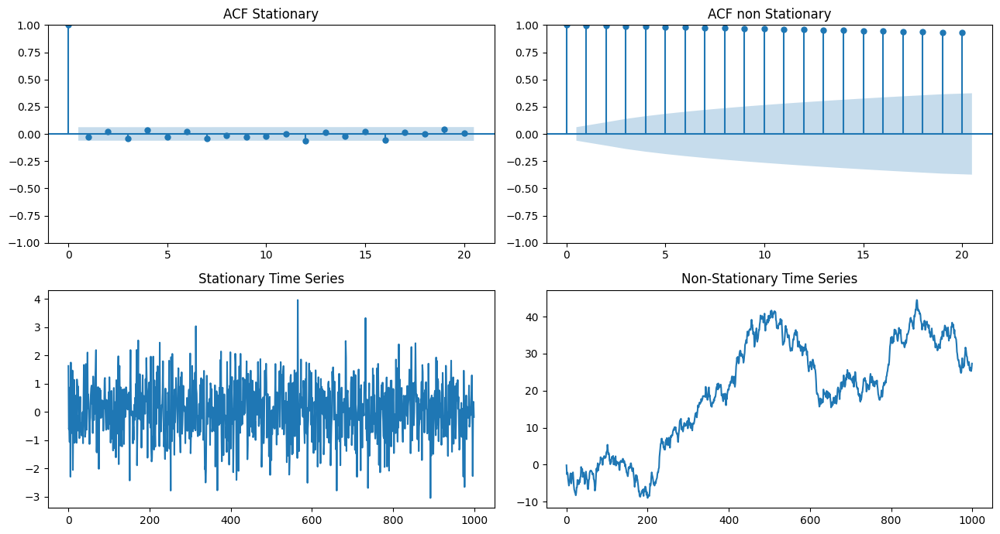
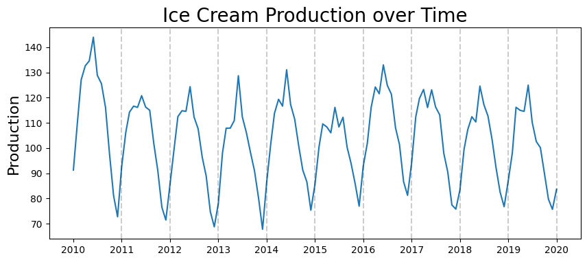
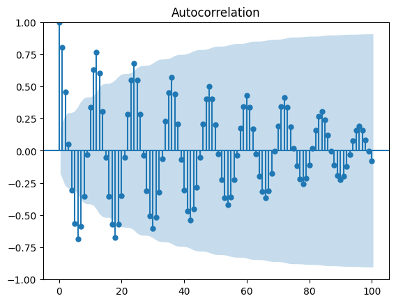
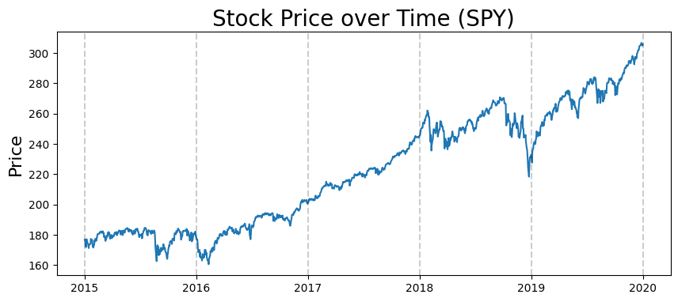
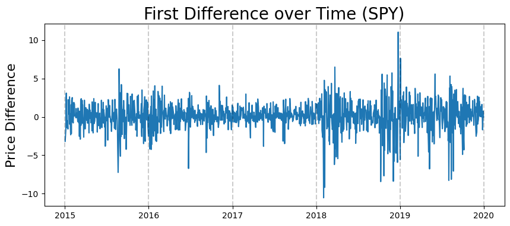
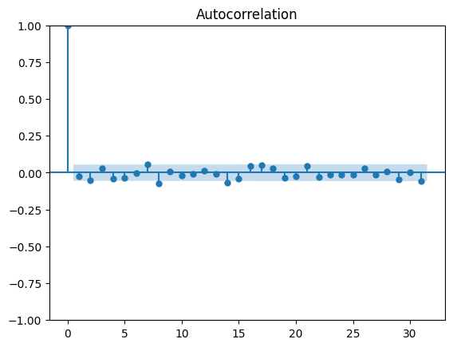

import pandas as pd
import numpy as np
import matplotlib.pyplot as plt
from pandas.plotting import register_matplotlib_converters
from statsmodels.graphics.tsaplots import plot_acf, plot_pacf
register_matplotlib_converters()
import os
data_folder = '../data/'
1: ACF vs PACF#
# Generate a stationary time series
np.random.seed(1)
stationary_ts = np.random.normal(0, 1, size=1000)
# Generate a non-stationary time series
nonstationary_ts = np.cumsum(np.random.normal(0, 1, size=1000))
# Compute the autocorrelation function for both time series
lags = 20
plt.subplots(2, 2, figsize=(13,7))
acf_stationary = plot_acf(stationary_ts, lags=lags, alpha=0.05, ax=plt.subplot(221), title='ACF Stationary')
acf_nonstationary = plot_acf(nonstationary_ts, lags=lags, alpha=0.05, ax=plt.subplot(222), title= 'ACF non Stationary')
# Plot the time series
plt.subplot(223)
plt.plot(stationary_ts)
plt.title("Stationary Time Series")
plt.subplot(224)
plt.plot(nonstationary_ts)
plt.title("Non-Stationary Time Series")
plt.tight_layout()
plt.show()

Ice Cream Production Data#
#read data
df_ice_cream = pd.read_csv(os.path.join(data_folder, 'ice_cream.csv'))
df_ice_cream.head()
| DATE | IPN31152N | |
|---|---|---|
| 0 | 1972-01-01 | 59.9622 |
| 1 | 1972-02-01 | 67.0605 |
| 2 | 1972-03-01 | 74.2350 |
| 3 | 1972-04-01 | 78.1120 |
| 4 | 1972-05-01 | 84.7636 |
#rename columns to something more understandable
df_ice_cream.rename(columns={'DATE':'date', 'IPN31152N':'production'}, inplace=True)
#convert date column to datetime type
df_ice_cream['date'] = pd.to_datetime(df_ice_cream.date)
#set date as index
df_ice_cream.set_index('date', inplace=True)
#just get data from 2010 onwards
start_date = pd.to_datetime('2010-01-01')
df_ice_cream = df_ice_cream[start_date:]
#show result
df_ice_cream.head()
| production | |
|---|---|
| date | |
| 2010-01-01 | 91.2895 |
| 2010-02-01 | 110.4994 |
| 2010-03-01 | 127.0971 |
| 2010-04-01 | 132.6468 |
| 2010-05-01 | 134.5576 |
plt.figure(figsize=(10,4))
plt.plot(df_ice_cream.production)
plt.title('Ice Cream Production over Time', fontsize=20)
plt.ylabel('Production', fontsize=16)
for year in range(2011,2021):
plt.axvline(pd.to_datetime(str(year)+'-01-01'), color='k', linestyle='--', alpha=0.2)

ACF#
acf_plot = plot_acf(df_ice_cream.production, lags=100)

Based on decaying ACF, we are likely dealing with an Auto Regressive process#
PACF#
pacf_plot = plot_pacf(df_ice_cream.production)
/home/ubuntu/Documents/Projects/STI_FX_Intervention/.venv/lib/python3.9/site-packages/statsmodels/graphics/tsaplots.py:348: FutureWarning: The default method 'yw' can produce PACF values outside of the [-1,1] interval. After 0.13, the default will change tounadjusted Yule-Walker ('ywm'). You can use this method now by setting method='ywm'.
warnings.warn(
Based on PACF, we should start with an Auto Regressive model with lags 1, 2, 3, 10, 13#
On stock data#
import yfinance as yf
#define the ticker symbol
tickerSymbol = 'SPY'
#get data on this ticker
tickerData = yf.Ticker(tickerSymbol)
#get the historical prices for this ticker
tickerDf = tickerData.history(period='1d', start='2015-1-1', end='2020-1-1')
tickerDf = tickerDf[['Close']]
#see your data
tickerDf.head()
| Close | |
|---|---|
| Date | |
| 2015-01-02 00:00:00-05:00 | 176.788849 |
| 2015-01-05 00:00:00-05:00 | 173.596115 |
| 2015-01-06 00:00:00-05:00 | 171.961029 |
| 2015-01-07 00:00:00-05:00 | 174.103851 |
| 2015-01-08 00:00:00-05:00 | 177.193390 |
plt.figure(figsize=(10,4))
plt.plot(tickerDf.Close)
plt.title('Stock Price over Time (%s)'%tickerSymbol, fontsize=20)
plt.ylabel('Price', fontsize=16)
for year in range(2015,2021):
plt.axvline(pd.to_datetime(str(year)+'-01-01'), color='k', linestyle='--', alpha=0.2)

Stationarity: take first difference of this series#
#take first difference
first_diffs = tickerDf.Close.values[1:] - tickerDf.Close.values[:-1]
first_diffs = np.concatenate([first_diffs, [0]])
#set first difference as variable in dataframe
tickerDf['FirstDifference'] = first_diffs
tickerDf.head()
| Close | FirstDifference | |
|---|---|---|
| Date | ||
| 2015-01-02 00:00:00-05:00 | 176.788849 | -3.192734 |
| 2015-01-05 00:00:00-05:00 | 173.596115 | -1.635086 |
| 2015-01-06 00:00:00-05:00 | 171.961029 | 2.142822 |
| 2015-01-07 00:00:00-05:00 | 174.103851 | 3.089539 |
| 2015-01-08 00:00:00-05:00 | 177.193390 | -1.419983 |
plt.figure(figsize=(10,4))
plt.plot(tickerDf.FirstDifference)
plt.title('First Difference over Time (%s)'%tickerSymbol, fontsize=20)
plt.ylabel('Price Difference', fontsize=16)
for year in range(2015,2021):
plt.axvline(pd.to_datetime(str(year)+'-01-01'), color='k', linestyle='--', alpha=0.2)

ACF#
acf_plot = plot_acf(tickerDf.FirstDifference)

ACF isn’t that informative#
PACF#
pacf_plot = plot_pacf(tickerDf.FirstDifference)
/home/ubuntu/Documents/Projects/STI_FX_Intervention/.venv/lib/python3.9/site-packages/statsmodels/graphics/tsaplots.py:348: FutureWarning: The default method 'yw' can produce PACF values outside of the [-1,1] interval. After 0.13, the default will change tounadjusted Yule-Walker ('ywm'). You can use this method now by setting method='ywm'.
warnings.warn(